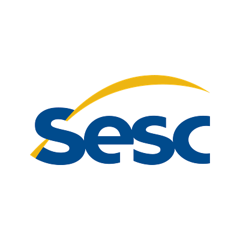
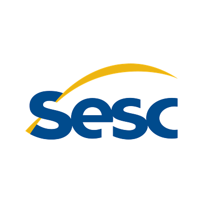

A ReCycler revoluciona a
sustentabilidade e a
tecnologia.
A BioTech permite ao usuário a exploração do máximo de
potencial reciclável de seu lixo eletrônico pela nossa impressora
3D, capaz de utilizar materiais reciclados provenientes de
eletrônicos antigos.
 

Porque utilizar a ReCycler?
- Redução do desperdício eletrônico.
- Conservação de recursos naturais.
- Redução de custos de produção.
- Acessibilidade.
- Compromisso com a responsabilidade corporativa.
- Impacto positivo na comunidade.
Principais Benefícios.
A ReCycler consegue ser benéfica para sua empresa
e para o meio ambiente.
Economia
Financeira
- Redução de custos de produção:
Materiais reciclados costumam ser
mais baratos do que os materiais
virgens, o que pode resultar em
economia nos custos de
produção de itens impressos em 3D. - Acessibilidade: Ao tornar os materiais
de impressão mais acessíveis, uma
impressora 3D que utiliza materiais
reciclados pode permitir que mais
pessoas tenham acesso à tecnologia
de fabricação aditiva.
Sustentabilidade
Ambiental
- Redução do desperdício eletrônico:
Ao utilizar materiais reciclados, a
impressora 3D contribui para diminuir
a quantidade de resíduos eletrônicos
que acabam em aterros sanitários ou
poluindo o meio ambiente. - Conservação de recursos naturais: O
uso de materiais reciclados reduz a
necessidade de extrair novos recursos,
como plásticos e metais, ajudando a
preservar os recursos naturais do
planeta.
Responsabilidade
Social
- Compromisso com a
responsabilidade corporativa: Investir
em tecnologias sustentáveis, como
uma impressora 3D que utiliza
materiais reciclados, demonstra o
compromisso da empresa com
práticas de negócios socialmente
responsáveis e ambientalmente
conscientes. - Impacto positivo na comunidade: Ao
apoiar a reciclagem eletrônica e
promover a redução do desperdício, a
empresa contribui para o bem-estar
da comunidade e para a construção
de um futuro mais sustentável.
Nosso projeto é apoiado por mais de 100 empresas e organizações que confiam em nós, faça parte disso.


 

Diferentes
Usabilidades.
A ReCycler pode ser utilizada
de diferentes formas, como
ela é utilizada no ramo
acadêmico.
Tudo só depende da sua
criatividade e do que você
busca ao utilizá-la.
Sobre Nós
A nossa empresa é focada em trazer soluções
sustentáveis acessíveis para usuários e empresas que
acreditem no nosso potencial de mudar o mundo.
Acreditamos que somos capazes de extrair o potencial
ecológico da tecnologia através dos nossos produtos.